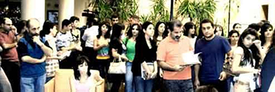
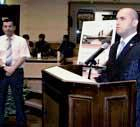
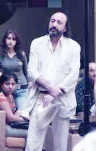
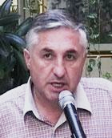
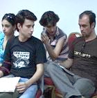
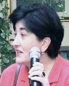

фестиваль, рожденный несколькими чудаками и теми людьми, которые поверили им
Открытие Южнокавказского
фестиваля мира и прав человека
в Ереване
22 сентября 2008
Эдвард Антинян: Дорогие соотечественники, многоуважаемые гости, Южнокавказский фестиваль мира и прав человека «Я – Человек» в течение этих трех дней пройдет в Ереване. Фестиваль организуется уже второй год, в этом году он пройдет в 5 городах республики, а в масштабе всего Южного Кавказа организованы 27 подобных фестивалей. Инициаторами фестиваля являются Фонд Генриха Белля, Фонд Открытого Общества, поддерживают фестиваль Фонд Содействие Евразия и посольство Швейцарии в Грузии.
Организатор ереванского фестиваля - неправительственная организация «Демпрос», председателем которой являюсь я, Эдвард Антинян.
Наша цель в том, чтобы в процессе фестиваля зритель посмотрел фильмы о конфликтах в различных государствах, высказал и свое мнение о проблемах, оценил и нашел проблемы общие для нашего общества и общества тех стран, о которых рассказывают фильмы. Важно активное участие зрителя, особенно молодого зрителя. Очень важно чтобы девиз «Я - Человек» был виден не только на экране, но и получил свое воплощение в зале.
Исходя из того, что наша основная аудитория – молодежь, предоставляю слово председателю постоянной парламентской комиссии по вопросам науки, образования, культуры, молодежи и спорта Армену Ашотяну.
22 сентября 2008
Эдвард Антинян: Дорогие соотечественники, многоуважаемые гости, Южнокавказский фестиваль мира и прав человека «Я – Человек» в течение этих трех дней пройдет в Ереване. Фестиваль организуется уже второй год, в этом году он пройдет в 5 городах республики, а в масштабе всего Южного Кавказа организованы 27 подобных фестивалей. Инициаторами фестиваля являются Фонд Генриха Белля, Фонд Открытого Общества, поддерживают фестиваль Фонд Содействие Евразия и посольство Швейцарии в Грузии.
Организатор ереванского фестиваля - неправительственная организация «Демпрос», председателем которой являюсь я, Эдвард Антинян.
Наша цель в том, чтобы в процессе фестиваля зритель посмотрел фильмы о конфликтах в различных государствах, высказал и свое мнение о проблемах, оценил и нашел проблемы общие для нашего общества и общества тех стран, о которых рассказывают фильмы. Важно активное участие зрителя, особенно молодого зрителя. Очень важно чтобы девиз «Я - Человек» был виден не только на экране, но и получил свое воплощение в зале.
Исходя из того, что наша основная аудитория – молодежь, предоставляю слово председателю постоянной парламентской комиссии по вопросам науки, образования, культуры, молодежи и спорта Армену Ашотяну.
три взгляда на один проект

Организатор Эдвард Антинян (слева)
и председатель парламентской комиссии по вопросам науки, образования, культуры, молодежи и спорта
Армен Ашотян
Армен Ашотян: Дорогие соотечественники, дамы и господа, я хочу приветствовать сегодняшнее мероприятие, и будет лишним говорить о том, насколько актуальны для нашего региона понятия мир и права человека. С этой точки зрения мероприятие, организованное НПО «Демократия, благосостояние, безопасность», уверен, что найдет своего зрителя и соответственную реакцию своих мишень-групп.
Я хочу сказать также о том, какими должны быть, на мой взгляд, отношения между правительством и молодежью. Молодежь не только нуждается в государственной, культурной и социальной политике, молодежь нуждается также в национальном отношении и национальном образовании. С этой точки зрения девиз сегодняшнего фестиваля «Я - Человек» несомненно важен, но не менее важно, думаю, для молодежи, живущей в Армении, понятие «Я – Армянин» (более близкий перевод Я – человек армянской национальности), где слово армянин сообщает не меньший авторитет, звучание и оттенок жизни и образу мышления каждого молодого человека.
Я желаю успеха фестивалю, и думаю, что молодые люди, которые будут иметь возможность в течение этих трех дней посмотреть соответствующие документальные фильмы, получат большие впечатления, но, тем не менее, не будут забывать о том, я снова должен повторить, что национальный компонент в воспитании молодежи не менее важен, чем гражданское воспитание. Спасибо.
Эдвард Антинян: Предоставляю слово члену жюри Южнокавказского фестиваля, председателю Кавказского Центра Миротворческих Инициатив, координатору фестивалей, проводимых в Армении, господину Георгию Ваняну.
Георгий Ванян: Дорогие друзья, спасибо, что пришли. Прежде чем начать, прошу минутой молчания почтить память жертв последней войны на Южном Кавказе. (Минута молчания)
Южнокавказский фестиваль мира и прав человека «Я – Человек» был основан 2007 году и надеюсь, ему предстоит долгая жизнь. Но судьба этого фестиваля зависит не от нас, общественных деятелей, и не от неправительственных организаций. Я, как член жюри, изначально выдвинул свои принципы и буду последователен в своей позиции - фестиваль должен выйти из рамок обычных нпо-шных мероприятий и прийти к обыкновенным людям. Гражданин должен стать действующим лицом фестиваля. Чем активнее будут граждане, которым служит этот фестиваль, тем более продолжительной будет наша работа. Я надеюсь, что в процессе фестивальных обсуждений, потребность мире, законсервированная в каждой нашей семье, будет вынесена на площадь и озвученным на этой площади голосом отчужденного гражданина, гражданина - мишени конфликта. Нам надо формировать наш социальный заказ на мир, и превратить государственных и политических деятелей в исполнителей этого заказа. Хочу выразить особую благодарность Фонду Содействие Евразия в Армении за поддержку фестиваля, и предоставить слово директору фонда господину Тер-Габриеляну.
Геворг Тер-Габриелян: Спасибо. Я хотел бы очень коротко сказать об особенностях этого фестиваля. Во-первых, фестиваль финансируют три региональных донора и наш фонд только один из них. Мы очень рады, что длительный и требующий больших усилий этот процесс согласования завершен, и фестиваль уже дошел до Еревана, Армении. Другая особенность этого фестиваля в том, что это наверно один, единственный проект, фильмы которого демонстрируются во всем регионе Южного Кавказа без исключения – фестиваль прошел не только в самих Грузии и Азербайджане, но и на территории Абхазии, Южной Осетии и Нагорном Карабахе. Теперь он приехал в Армению. Таким образом фестиваль становится символом южнокавказской общности вопреки всем конфликтам. Благодарю за внимание.
Георгий Ванян: Дорогие друзья, хочу предоставить слово приветствия, разрешите сказать, классику современного армянского кино, директору кинофестиваля «Золотой абрикос», моему хорошему другу – Арутюну Хачатряну.
Я хочу сказать также о том, какими должны быть, на мой взгляд, отношения между правительством и молодежью. Молодежь не только нуждается в государственной, культурной и социальной политике, молодежь нуждается также в национальном отношении и национальном образовании. С этой точки зрения девиз сегодняшнего фестиваля «Я - Человек» несомненно важен, но не менее важно, думаю, для молодежи, живущей в Армении, понятие «Я – Армянин» (более близкий перевод Я – человек армянской национальности), где слово армянин сообщает не меньший авторитет, звучание и оттенок жизни и образу мышления каждого молодого человека.
Я желаю успеха фестивалю, и думаю, что молодые люди, которые будут иметь возможность в течение этих трех дней посмотреть соответствующие документальные фильмы, получат большие впечатления, но, тем не менее, не будут забывать о том, я снова должен повторить, что национальный компонент в воспитании молодежи не менее важен, чем гражданское воспитание. Спасибо.
Эдвард Антинян: Предоставляю слово члену жюри Южнокавказского фестиваля, председателю Кавказского Центра Миротворческих Инициатив, координатору фестивалей, проводимых в Армении, господину Георгию Ваняну.
Георгий Ванян: Дорогие друзья, спасибо, что пришли. Прежде чем начать, прошу минутой молчания почтить память жертв последней войны на Южном Кавказе. (Минута молчания)
Южнокавказский фестиваль мира и прав человека «Я – Человек» был основан 2007 году и надеюсь, ему предстоит долгая жизнь. Но судьба этого фестиваля зависит не от нас, общественных деятелей, и не от неправительственных организаций. Я, как член жюри, изначально выдвинул свои принципы и буду последователен в своей позиции - фестиваль должен выйти из рамок обычных нпо-шных мероприятий и прийти к обыкновенным людям. Гражданин должен стать действующим лицом фестиваля. Чем активнее будут граждане, которым служит этот фестиваль, тем более продолжительной будет наша работа. Я надеюсь, что в процессе фестивальных обсуждений, потребность мире, законсервированная в каждой нашей семье, будет вынесена на площадь и озвученным на этой площади голосом отчужденного гражданина, гражданина - мишени конфликта. Нам надо формировать наш социальный заказ на мир, и превратить государственных и политических деятелей в исполнителей этого заказа. Хочу выразить особую благодарность Фонду Содействие Евразия в Армении за поддержку фестиваля, и предоставить слово директору фонда господину Тер-Габриеляну.
Геворг Тер-Габриелян: Спасибо. Я хотел бы очень коротко сказать об особенностях этого фестиваля. Во-первых, фестиваль финансируют три региональных донора и наш фонд только один из них. Мы очень рады, что длительный и требующий больших усилий этот процесс согласования завершен, и фестиваль уже дошел до Еревана, Армении. Другая особенность этого фестиваля в том, что это наверно один, единственный проект, фильмы которого демонстрируются во всем регионе Южного Кавказа без исключения – фестиваль прошел не только в самих Грузии и Азербайджане, но и на территории Абхазии, Южной Осетии и Нагорном Карабахе. Теперь он приехал в Армению. Таким образом фестиваль становится символом южнокавказской общности вопреки всем конфликтам. Благодарю за внимание.
Георгий Ванян: Дорогие друзья, хочу предоставить слово приветствия, разрешите сказать, классику современного армянского кино, директору кинофестиваля «Золотой абрикос», моему хорошему другу – Арутюну Хачатряну.
высокомерное молчание, наполненное тем, что мы знаем больше, чем наш сосед

Арутюн Хачатрян
кинорежиссер, директор кинофестиваля «Золотой абрикос»
кинорежиссер, директор кинофестиваля «Золотой абрикос»
Арутюн Хачатрян: «Золотой абрикос», конечно же, приветствует этот фестиваль, потому что фестиваль сам по себе никогда не является самоцелью. Я думаю, этот фестиваль – рожденный несколькими чудаками и теми людьми, которые поверили им, стали рядом с этими чудаками, стал началом пути – каменистого и трудного, но в то же время очень гуманного и правильного. Потому что сейчас есть вопросы, которыми не занимаются государственные мужи, не занимаются профессионалы, есть проблемы, которые видим мы, которые замечаем мы и должны фиксировать их в фильмах, картинах, в фотографиях.
Наш фестиваль, естественно имеет другие цели – это фестиваль профессионального кино, но я считаю, что ваш фестиваль очень важен, потому, что явления, состояния и трудности, которые есть сегодня, остаются вне внимания, вне поля зрения. И ваше отношение, ваша любовь, ваши чувства очень важны для этого фестиваля.
Мы готовы участвовать на ваших фестивалях и помогать в меру своих сил. И в нашем фестивале тоже мы придаем большое значение присутствию кинодеятелей из региона Южного Кавказа, потому что мы - единый регион, и мы должны обмениваться нашими заботами, болью, горем, говорить, пытаться рассказать друг другу о том, что мы чувствуем, о понятом и не понятом нами. Потому что конфликты возникают, когда мы перестаем говорить друг с другом. Они возникают от высокомерного молчания наполненного тем, что мы знаем больше, чем наш сосед.
Здесь, у вас, разговор уже начался и пусть он будет продолжен. Счастливого вам пути!
Георгий Ванян: Хочу предоставить приветственное слово человеку, который еще в самом начале войны имел гражданскую смелость восстать и озвучить принцип и потребность мирного сосуществования. Прошу – Ашот Блеян.
Наш фестиваль, естественно имеет другие цели – это фестиваль профессионального кино, но я считаю, что ваш фестиваль очень важен, потому, что явления, состояния и трудности, которые есть сегодня, остаются вне внимания, вне поля зрения. И ваше отношение, ваша любовь, ваши чувства очень важны для этого фестиваля.
Мы готовы участвовать на ваших фестивалях и помогать в меру своих сил. И в нашем фестивале тоже мы придаем большое значение присутствию кинодеятелей из региона Южного Кавказа, потому что мы - единый регион, и мы должны обмениваться нашими заботами, болью, горем, говорить, пытаться рассказать друг другу о том, что мы чувствуем, о понятом и не понятом нами. Потому что конфликты возникают, когда мы перестаем говорить друг с другом. Они возникают от высокомерного молчания наполненного тем, что мы знаем больше, чем наш сосед.
Здесь, у вас, разговор уже начался и пусть он будет продолжен. Счастливого вам пути!
Георгий Ванян: Хочу предоставить приветственное слово человеку, который еще в самом начале войны имел гражданскую смелость восстать и озвучить принцип и потребность мирного сосуществования. Прошу – Ашот Блеян.
ужасные конфликты южного кавказа

Ашот Блеян
директор учебного комплекса «Мхитар Себастаци»
директор учебного комплекса «Мхитар Себастаци»
Ашот Блеян: Спасибо. В 1988 году, начиная свою общественно-политическую деятельность, я знал точно три вещи и хочу снова озвучить эти три вещи.
Самым ужасным в моей жизни были и остаются конфликты на Южном Кавказе, межнациональные конфликты. Какие бы ни были мнения и версии, я сам думаю, что наши народы, мы сами ответственны за это противостояние, за эти конфликты, ответственны нашим каждодневным участием и каждодневным попустительством. Последнее грузино-осетинские столкновения для меня стали тем злосчастным деянием, где я чувствую свою ответственность и свою вину. Думаю, этот фестиваль может стать одним из средств противодействия этой постоянной угрозе кровопролития.
Я знаю что заблуждение, плохое знание друг друга, было и является главным грехом южнокавказских народов. Мы друг друга плохо знаем. Думаю, этот фестиваль может стать поводом для того, чтобы мы лучше узнали друг друга.
И наконец, мы должны осознать важность прав человека, которые для меня ассоциируются со свободой. Мы, на Южном Кавказе, остаемся несвободными, потому, что никак не связываем между собой мир и свободу, между тем мир и свобода неразделимы. Я приветствую фестиваль, объединивший эти два важнейших понятия. Только при уважении индивидуальных прав и свобод человека возможен мир на Кавказе. Приветствую фестиваль и готов стать его добросовестным участником.
Самым ужасным в моей жизни были и остаются конфликты на Южном Кавказе, межнациональные конфликты. Какие бы ни были мнения и версии, я сам думаю, что наши народы, мы сами ответственны за это противостояние, за эти конфликты, ответственны нашим каждодневным участием и каждодневным попустительством. Последнее грузино-осетинские столкновения для меня стали тем злосчастным деянием, где я чувствую свою ответственность и свою вину. Думаю, этот фестиваль может стать одним из средств противодействия этой постоянной угрозе кровопролития.
Я знаю что заблуждение, плохое знание друг друга, было и является главным грехом южнокавказских народов. Мы друг друга плохо знаем. Думаю, этот фестиваль может стать поводом для того, чтобы мы лучше узнали друг друга.
И наконец, мы должны осознать важность прав человека, которые для меня ассоциируются со свободой. Мы, на Южном Кавказе, остаемся несвободными, потому, что никак не связываем между собой мир и свободу, между тем мир и свобода неразделимы. Я приветствую фестиваль, объединивший эти два важнейших понятия. Только при уважении индивидуальных прав и свобод человека возможен мир на Кавказе. Приветствую фестиваль и готов стать его добросовестным участником.
маршрут и команда фестиваля: грузины, армяне

Юлия Адельханова, Темури Кигурадзе, Луиза Погосян, Ираклий Чихладзе
Георгий Ванян: Сегодня я с любовью хочу представить вам моих коллег из Грузии. Иракли Чихладзе. Он будет освещать весь ход фестиваля в Армении, общественные обсуждения, встречи воплотятся в его интервью и репортажи. Благодарю Ираклия за его работу.
Кавказский Центр Миротворческих Инициатив для поддержки деятельности со-организаторов в городах Армении, за исключением фестиваля в Гюмри, пригласил гостей из Грузии. Со всем уважением хочу представить вам молодого журналиста, корреспондента газеты «Мессенджер», раненного в Цхинвали, прошедшего через ужас войны - Темури Кигурадзе. C радостью хочу представить талантливого начинающего журналиста, уже сделавшую значимую заявку в журналистике. А где же мы были? - с таким вопросом обращается к нам представитель поколения войны – Юлия Адельханова.
Наши гости попробуют заполнить тот кричащий вакуум в информации, которую мы имеем о последней войне, и о том, что происходит в Грузии вообще. Надеюсь, предстоящее общение станет для наших журналистов поводом для налаживания профессионального сотрудничества и обмена информацией с грузинскими коллегами.
Меня уже спрашивали журналисты о том, являются ли эти фестивали проектами КЦМИ. Отвечаю - нет. КЦМИ только координирует все фестивали, задуманные со-организаторами, в пяти городах Армении. Несколько слов об уже прошедших фестивалях.
В приграничном с Грузией и Азербайджаном Ноемберяне состоялся фестиваль моей мечты, организованный Клубом молодежной деятельности Ноемберяна во главе с Мхитаром Гишяном. Прошу аплодисменты ему. Жители Ноемберяна и близлежащих пограничных сел в течение трех дней провели бурные обсуждения, которые будут представлены на нашем сайте.
Следующий пункт проекта был в Ванадзоре. И там, в переполненном зале, во время обсуждения были поставлены многие важные вопросы, те проблемы, от которых убегают наши политические деятели.
Третьим на маршруте был город Гюмри. Там, бывают и неудачи, прошло просто мероприятие для мероприятия. После Еревана мы уедем в Егегнадзор для претворения в жизнь идеи молодого деятеля Нане Асатрян, и я уверен, что в Егегнадзоре мы сможем провести полноценный фестиваль.
Эти три дня в каждом из городов дают нам возможность сделать выбор между политическими спекуляциями и гражданским диалогом. Воспользуемся этим случаем сегодня и в последующие два дня.
Тема первого обсуждения: «Армения-Азербайджан: спекуляции и диалог, где пролегает линия раздела?”. Во второй день увиденные фильмы дадут нам возможность обсудить тему «Мы и другие». На третий день на обсуждение будет поставлена тема «Армения-Грузия: предопределенные вызовы». Эти, предопределенные уже на протяжении многих лет, вызовы и угрозы, подобно мине замедленного действия взорваны между нами, и мы стоим с поникшей головой. Куда идти? Думаю, фестиваль станет средством, помогающим найти новые пути друг к другу.
И наконец, хочу представить ведущего фестиваля – актера Ванадзорского государственного драматического театра имени Абеляна, главного призера ежегодного республиканского конкурса «Артист 2007» – Гамлета Гюльзадяна. Гамлет виртуозно провел фестиваль в Ванадзоре, и я, извинившись перед его ереванским коллегой, попросил передать Гамлету микрофон столичного фестиваля. Благодарю господина Гюльзадяна за то, что согласился на мое предложение, вырвав эти три дня из своего напряженного актерского графика.
Прежде чем пригласить вас в кинозал, предоставляю слово многоуважаемому представителю посольства Грузии в Армении Нино Апциаури.
Кавказский Центр Миротворческих Инициатив для поддержки деятельности со-организаторов в городах Армении, за исключением фестиваля в Гюмри, пригласил гостей из Грузии. Со всем уважением хочу представить вам молодого журналиста, корреспондента газеты «Мессенджер», раненного в Цхинвали, прошедшего через ужас войны - Темури Кигурадзе. C радостью хочу представить талантливого начинающего журналиста, уже сделавшую значимую заявку в журналистике. А где же мы были? - с таким вопросом обращается к нам представитель поколения войны – Юлия Адельханова.
Наши гости попробуют заполнить тот кричащий вакуум в информации, которую мы имеем о последней войне, и о том, что происходит в Грузии вообще. Надеюсь, предстоящее общение станет для наших журналистов поводом для налаживания профессионального сотрудничества и обмена информацией с грузинскими коллегами.
Меня уже спрашивали журналисты о том, являются ли эти фестивали проектами КЦМИ. Отвечаю - нет. КЦМИ только координирует все фестивали, задуманные со-организаторами, в пяти городах Армении. Несколько слов об уже прошедших фестивалях.
В приграничном с Грузией и Азербайджаном Ноемберяне состоялся фестиваль моей мечты, организованный Клубом молодежной деятельности Ноемберяна во главе с Мхитаром Гишяном. Прошу аплодисменты ему. Жители Ноемберяна и близлежащих пограничных сел в течение трех дней провели бурные обсуждения, которые будут представлены на нашем сайте.
Следующий пункт проекта был в Ванадзоре. И там, в переполненном зале, во время обсуждения были поставлены многие важные вопросы, те проблемы, от которых убегают наши политические деятели.
Третьим на маршруте был город Гюмри. Там, бывают и неудачи, прошло просто мероприятие для мероприятия. После Еревана мы уедем в Егегнадзор для претворения в жизнь идеи молодого деятеля Нане Асатрян, и я уверен, что в Егегнадзоре мы сможем провести полноценный фестиваль.
Эти три дня в каждом из городов дают нам возможность сделать выбор между политическими спекуляциями и гражданским диалогом. Воспользуемся этим случаем сегодня и в последующие два дня.
Тема первого обсуждения: «Армения-Азербайджан: спекуляции и диалог, где пролегает линия раздела?”. Во второй день увиденные фильмы дадут нам возможность обсудить тему «Мы и другие». На третий день на обсуждение будет поставлена тема «Армения-Грузия: предопределенные вызовы». Эти, предопределенные уже на протяжении многих лет, вызовы и угрозы, подобно мине замедленного действия взорваны между нами, и мы стоим с поникшей головой. Куда идти? Думаю, фестиваль станет средством, помогающим найти новые пути друг к другу.
И наконец, хочу представить ведущего фестиваля – актера Ванадзорского государственного драматического театра имени Абеляна, главного призера ежегодного республиканского конкурса «Артист 2007» – Гамлета Гюльзадяна. Гамлет виртуозно провел фестиваль в Ванадзоре, и я, извинившись перед его ереванским коллегой, попросил передать Гамлету микрофон столичного фестиваля. Благодарю господина Гюльзадяна за то, что согласился на мое предложение, вырвав эти три дня из своего напряженного актерского графика.
Прежде чем пригласить вас в кинозал, предоставляю слово многоуважаемому представителю посольства Грузии в Армении Нино Апциаури.
человек соседей не выбирает

Нино Апциаури
советник посольства Грузии в Армении
советник посольства Грузии в Армении
Нино Апциаури: Приветствую всех собравшихся и желаю успеха фестивалю. Впервые от имени народа Грузии выражаю благодарность организаторам фестиваля. «Я – человек» - это очень ценное понятие. Сейчас мы переживаем очень тяжелый период для всего Южного Кавказа. И мы, армяне, азербайджанцы, грузины, должны постоянно напоминать друг другу, что наш прогресс и мир обусловлены нашим добрососедством. Человек не выбирает ни своих родителей, ни своих соседей.
История формировала нас как единое целое. Первый грузинский царь-христианин Мириан завещал своему сыну заботиться обо всем Кавказе. Именно с этим осознанием, заботы обо всем Кавказе, мы должны смотреть в свое будущее. Желаю мира и благосостояния всем кавказским народам. Я - человек, и хочу добавить: мы – кавказцы и должны думать обо всем Кавказе. Спасибо.
Записала Луиза Погосян
Фестиваль мира и прав человека в Армении проведен Кавказским Центром Миротворческих Инициатив при поддержке Фонда содействие Евразия - Армения за счет средств Агентства США по международному развитию - USAID
История формировала нас как единое целое. Первый грузинский царь-христианин Мириан завещал своему сыну заботиться обо всем Кавказе. Именно с этим осознанием, заботы обо всем Кавказе, мы должны смотреть в свое будущее. Желаю мира и благосостояния всем кавказским народам. Я - человек, и хочу добавить: мы – кавказцы и должны думать обо всем Кавказе. Спасибо.
Записала Луиза Погосян
Фестиваль мира и прав человека в Армении проведен Кавказским Центром Миротворческих Инициатив при поддержке Фонда содействие Евразия - Армения за счет средств Агентства США по международному развитию - USAID